PORTFOLIO
ATLAS V ALBUM ARTWORK - WANDERERS:
Active Development: 2015
Designing new album art ideas for ATLAS V's upcoming ablum: Wanderers. I did not create the background artwork used in these images. Full credit for the backgrounds goes to Adrian Mark Gillespie.
You can listen to the latest singles, Collider and Satellite Anthem Europa, here:
SITE RE-DESIGN:
Active Development: 2015
Working on some ideas for a new web layout; one that would be a bit less "geeky," but more professional. I've been so busy with work that I haven't even been able to finish my own portfolio! When I launched the site, I quickly wrote this current
layout without taking any time on its actual design.
I intend to organize my work into categories, rather than dumping it all on one page.
Note: This is just a possible idea for a new layout... I've been running a few ideas lately. Hopefully I can find time to finish them soon!
RMA DATABASE SOFTWARE:
Active Development: 2015
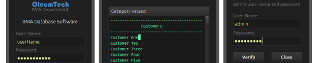
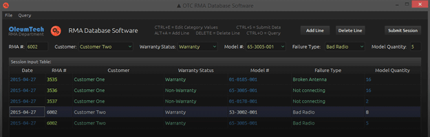
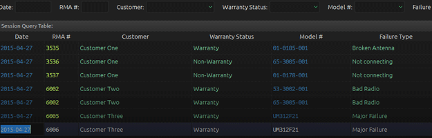
I designed this software for internal use as well. The objective was to configure a MySQL database on an internal test server and then design a user friendly interface for another department's archiving purposes.
Features:
- Cross-Platform (Linux/OSX)
- User-Name login authentication system
- Admin elevated privileged required for advanced database manipulation
- MySQL database utilization
- Editable category values
- Organized database table submission
- Adding, deleting, clearing lines/tables
- Database query filtering
- Exporting tables to CSV file format
- Shortcut Keys
- 100% customized graphics and theme
Note: This software was created internally for
OleumTech Corporation and is unavailable for public use.
SPACE DRIFTER:
Active Development: 2015
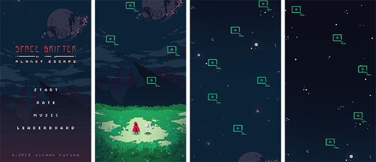
This is a new mobile app that my brother and I are working on. I just started creating the concept artwork. This is still a work in progress. The concept involves moving a character side to side in order to hit the targets. Once a target is hit,
the character is propelled up higher. The higher you get off the planet, the more points you will achieve. We have plans for additional features and mechanics.
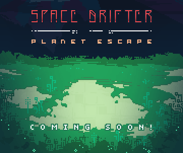
Other Features:
- Fast paced arcade game utilizing a physics engine
- Completely custom audio and visuals
- Leaderboards through iOS Gamecenter
Note: This app will most likely be released free for download on the iOS app store when it is complete.
TRIANGLE TIME:
Active Development: 2015
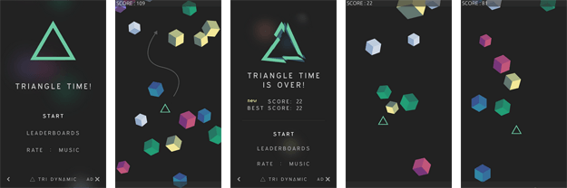
This was originally a web game developed by my brother, Ben Kray, for a class he was taking in school. Eventually we thought of redesigning and developing it for iOS. I created all of
the visuals and animation while he worked on the code and music. Together we created an extremly simple, yet addicting game. The objective of the game is simply to avoid getting hit by the falling cubes. Difficulty increases as time goes on.

Features:
- Fast paced arcade game utilizing a physics engine
- Completely custom audio and visuals
- Leaderboards through iOS Gamecenter
Note: This app is
free and compatible with iOS 6.0 and greater (although optimized for iOS 8.1).
CUSTOM MODBUS TEST SOFTWARE:
Active Development: 2014-2015
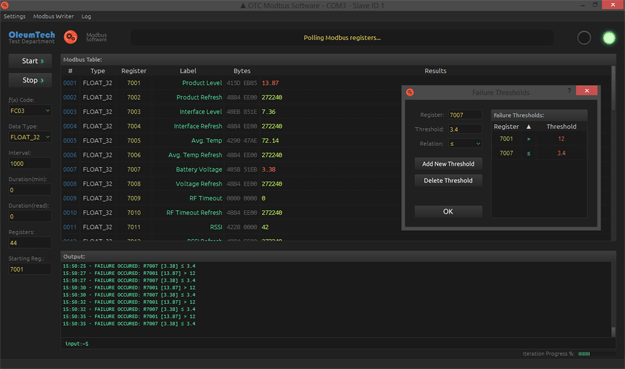
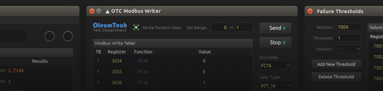
I designed this software for internal use only, for myself and other test engineers. The objective was to utilize Modbus communication protocol in conjunction with any device capable of Modbus RTU communication. There are a lot of professional
programs available for this, but none of them met my standards, and often had critical bugs preventing efficient testing, so I ended up writing my own.
Features:
- Cross-Platform (Linux/OSX)
- Modbus RTU Communication (Serial RS232/RS485)
- Complete COM Port Setup (COM Port/Baud Rate/Data Bits/Parity/Stop Bits/Slave ID)
- Module: Single/Multi-Read polling for 32-Bit Floating Point and 16-Bit Integer registers
- Module: Single/Multi-Write for 32-Bit Floating Point and 16-Bit Integer registers
- Efficiently formatted data logging option (csv), creates a new file every new day at midnight
- Module: Customizable failure threshold triggering (ex: if R7001 != 0 then output a failure message to log/console)
- Customizable register labling
- Byte value output
- Status Bar and Debug messaging
- Customizable test duration (minutes/read counts/write counts)
- Write random values to registers within custom set range
- Output terminal with an input command line
- Transmit LED indicators and itteration progress bar
- 100% customized graphics and theme
Note: This software was created internally for
OleumTech Corporation and is unavailable for public use.
CUSTOM RESISTANCE MEASUREMENT TEST SOFTWARE:
Active Development: 2014-2015
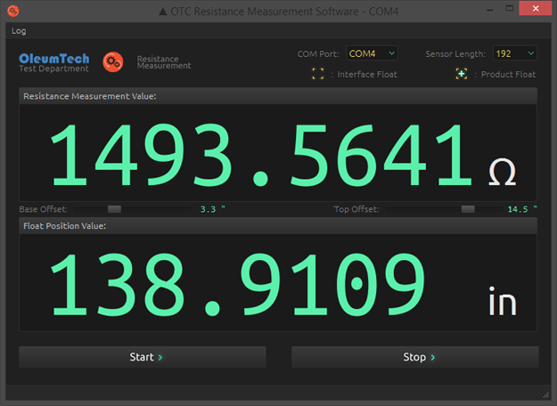
I designed this software for internal use only as well, for engineers and manufacturing verification. The objective was to utilize the IEEE-488 (GPIB) interface associated with a very accurate but old digital multimeter using 4-wire resistance
measurement. The measurement value is read by the computer at a dynamic interval and then converted to a custom value (in this case, length), based on a number of mathematical formulas derived from the physical product. There are a few other options
available including adjusting position offsets for calibration. Since this was designed for a product that is still in the testing phase, I cannot disclose any further information.
Other Features:
- Efficiently formatted data logging option (csv), creates a new file every new day at midnight
- 100% customized graphics and theme
Note: This software was created internally for
OleumTech Corporation and is unavailable for public use.
NUGENSOFT, LLC. DESIGN:
Active Development: 2014
Designed the logo and business cards for a software start-up company. The information on the card design was provided as a sample. Logo was designed using 3D Studio Max and Photoshop.
TECHSUPPORT SELF SERVICE PORTAL:
Active Development: 2014
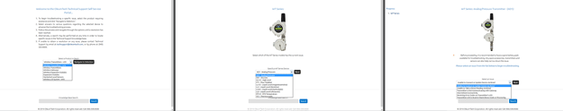
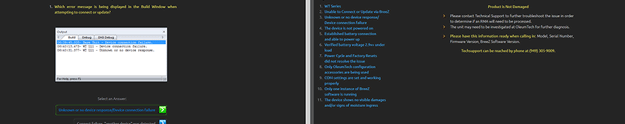
Designed and developed the framework for a customer and training self service portal for the technical support department at OleumTech Corporation. Very simple. Utilizes a search engine and includes 2 visual themes. This was created as a concept
to help alleviate Level 1 calls from the techsupport team, as well as to train new technicians. This was not made public yet.
ATLAS V ALBUM ARTWORK:
Active Development: 2012-2013
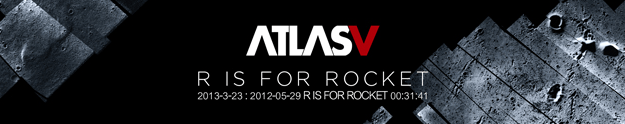
Designed the logo and album artwork for ATLAS V (Formerly known as ATLAS).
You can listen to their music here:
KAINE: SENTINEL OF THE SHADOW:
Active Development: 2012
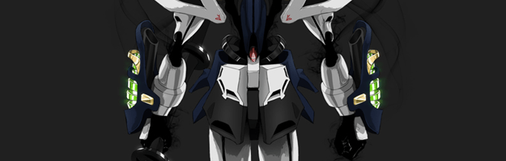
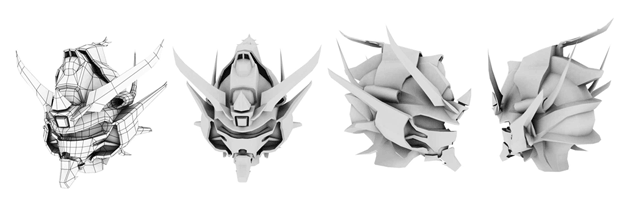
Digital drawing based on an old character concept I drew in 2008 for a story that I have been working on. The armor design is strongly influenced by Gundam, a popular japanese animation franchise. I also started a 3D model for a game I was working
on a while back, but work ended up taking too much of my time to finish it.
Geeky Backstory: Kaine is a levitation capable warrior of a tall and thin alien race called the Shadow. Wears a suit of armor and wields a long double bladed sword. I was actually lazy with the sword. The final design will be more intricate.
Note:This is also located on my now 'dead' Deviant Art page here.
Character 102:
Active Development: 2012

Gantz has been my favorite manga for a very long time. So I decided to draw my own character in the Gantz world. I think a lot of people confused him with the series' main character, Kurono Kei. I have yet to name this character though.
Note:This is also located on my now 'dead' Deviant Art page here.
Miscellaneous Digital Film:
Active Development: 2011-2012
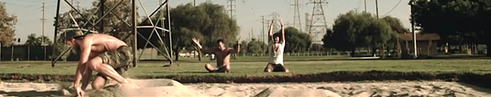
A few digital film tests using a Canon 7D and a Sony FS700. Slow motion was alot less accessable before smart phones could film in high framerates.
ARCHIVED WORK:
Below contains some of the work that I had managed to dig up from my old HDD backups that had eventually crashed. Unfortunately I lost almost half of my work dating back from 2000. I'm not particularly happy with most of
my old work, at least looking back on it now with recent improvements in todays graphics potential.
Miscellaneous Business:
Active Development: 2007-2008
This is a small compilation of some of my older work when I was a web developer/graphic designer for an internet retail and distribution company. The now "out of date" art style used in these reflects the time when smartphones started to
come into the market, specifically the Apple iPhone.
Character 23:
Active Development: 2007

This is a fairly old digital drawing based off of an actress. I had posted this somewhere before, but I cant remember where at the moment.
Edward Elric LOW-POLY 3D Model:
Active Development: 2005
It's a low-poly model of an anime character from a popular series called, Full Metal Alchemist. I believe I ended up giving it to a friend to animate for a Half-Life mod. I'm not sure whatever became of it actually haha!
Gohan LOW-POLY 3D Model:
Active Development: 2004
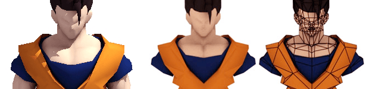
It's a low-poly model of an anime character from a popular series called, Dragon Ball Z. I never even finished it! I had originally intended to release it as a model replacement for gohan in an old popular Half-Life mod called, Earth's Special
Forces.
TRIGUN LOW-POLY 3D Models:
Active Development: 2004
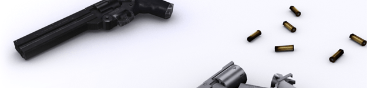
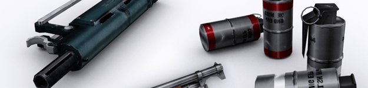
These models were all made for an old Half-Life mod called, Trigun: Escape From Pain. They are all first person "player view models" so some may seem somewhat incomplete. I was part of the development team in highschool. I cant stand
looking at some of the textures on these now! Two of them were "modified" by an apprentice of mine at the time, who was still learning about skinning.
The team eventually split up after a public alpha build was released. Everyone just was busy with their own lives. A few of these models, including the actual player models(Vash and Knives) were released for use in a Half-Life mod called,
The Specialists. They were complete with custom sounds and animations.
SHINING GUNDAM LOW-POLY 3D Models:
Active Development: 2004
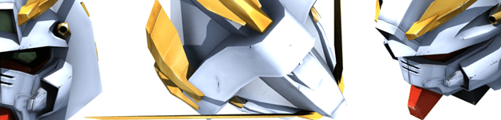
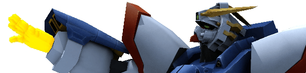
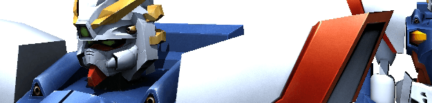
This model was being made for an old Half-Life mod called, Mechmod. I had just joined the development team as a modeler, shortly before they actually disbanded. It was unfortunate because the game was coming along nicely. It was even featured
in an issue of PC Gamer Magazine.
KOTOR LEVEL DESIGN:
Active Development: 2003
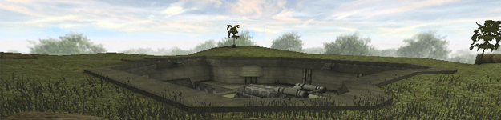
This map was created as a custom level for a game called Star Wars: Jedi Knight: Jedi Academy. That one tree in the back is just driving me nuts... Looking back at my old work makes me cringe sometimes! I also never got around to finishing
this.
HL: COUNTER-STRIKE LEVEL DESIGN:
Active Development: 2001-2003
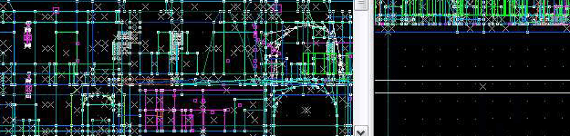
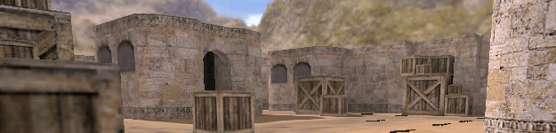
I created about 10-15 maps from 2001-2003, most of which were lost during a hard drive crash. I still have some of the bsp files though. I will eventually load them up in Counter-Strike and take some screenshots. Unfortunately, these two
screenshots are all I could find on my current hard drive.